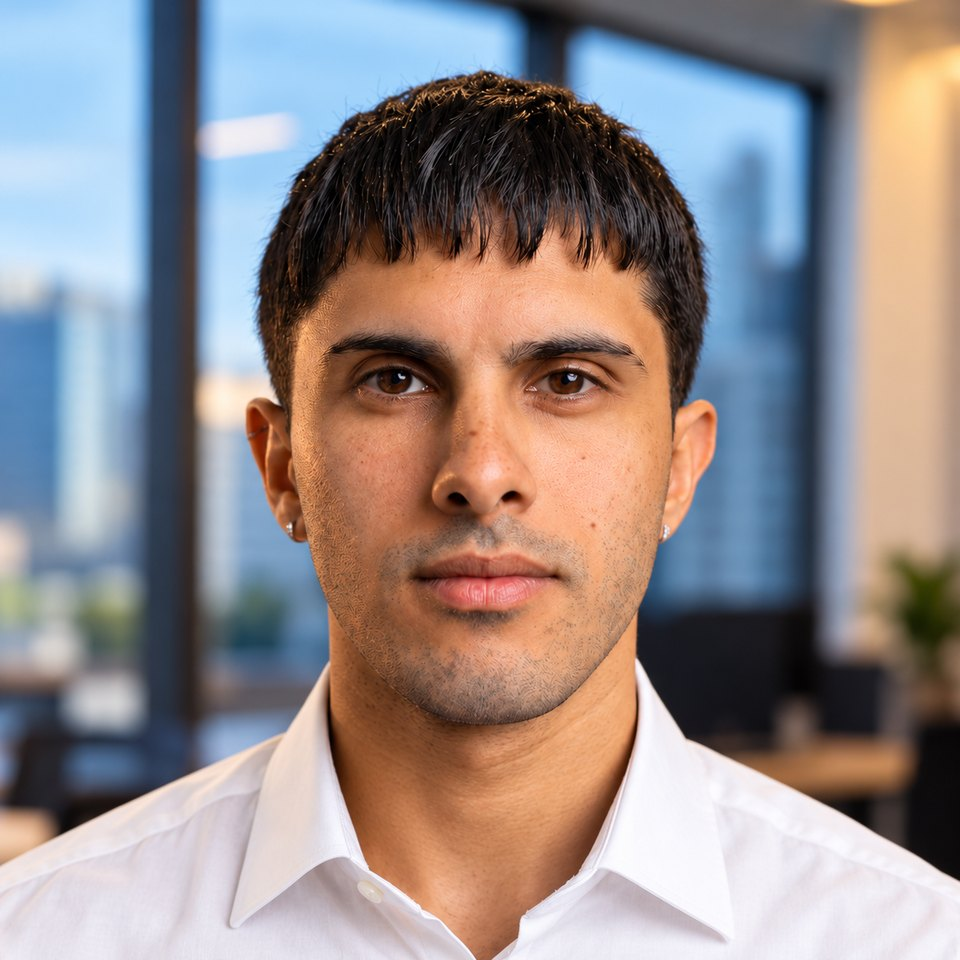

Diseñador visual · San Isidro, Buenos Aires
Luca AndreaDe Cesare
Diseño ideas que conectan estrategia y narrativa, desde un ad que convierte hasta un stand que se construye.

Sobre mí
Licenciado en Diseño por la Universidad Torcuato Di Tella, con experiencia en diseño gráfico, branding, contenido digital y comunicación visual. Trabajé en identidad visual, campañas digitales, e-commerce y packaging, junto a equipos de marketing y producción.
Experiencia
- 2025 — hoyDiseñador GráficoCan Cat
- 2026Community Manager y Diseñador de ContenidoBBPR Gastro · freelance
- 2025Diseñador GráficoCreative Forge · EE. UU.
- 2024Pasante de DiseñoGlobal Events
- 2022 — 2025Diseñador GráficoGlow Tech
Habilidades
- Branding
- Campañas y ads
- E-commerce
- Packaging
- Contenido para redes
- Diseño editorial
- Eventos y stands
- Modelado 3D
Formación
- 2024Licenciatura en DiseñoUniversidad Torcuato Di Tella
Herramientas
- Illustrator
- Photoshop
- After Effects
- Premiere
- Blender
- Fusion 360
- Twinmotion
Idiomas
- Español — Nativo
- Inglés — Avanzado
Trabajos
Una selección de trabajos para marcas como Mastercard, DirecTV GO, Can Cat y BBPR Gastro, junto con proyectos de la Universidad Di Tella.
Archivo
Proyectos anteriores, en su mayoría de la carrera.